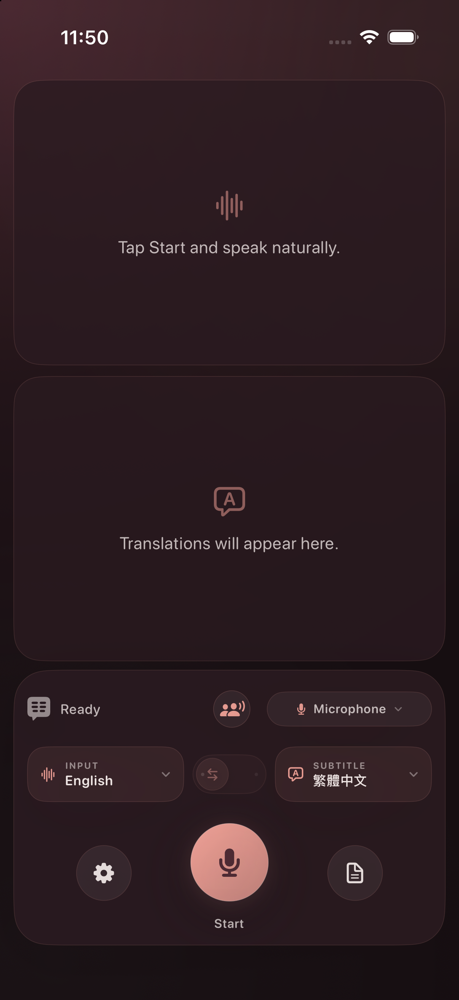

Nothing leaves the conversation
No account, network client, cloud transcription, analytics, or telemetry. Your words remain on the device in your hands.
Easy2say listens through one microphone, keeps both people visible, and drafts bilingual captions on device — without accounts, cloud transcription, or telemetry.

No account, network client, cloud transcription, analytics, or telemetry. Your words remain on the device in your hands.
Source and translation each receive half the screen: stacked in portrait, side by side in landscape.
Flip the other person’s half across a table, or let landscape mode open the conversation side by side.
01 · The experience
Not a transcript squeezed into a utility window. A calm, shared surface for following each other in the moment.
Original speech and its translation stay visible together, with a clear half of the screen for each.
Two people can speak their own languages into one microphone and read the other person’s words in theirs.
Flip one half 180 degrees so both people can read naturally with the device placed between them.
The app compares both language lanes; if noise confuses it, tap either half to say who has the floor.
A bundled 4-bit Breeze-ASR-26 model offers assistive Taigi-to-Chinese-character captions without a model download.
Review the session inside the app, then return to the live view without leaving the private workflow.
02 · How it works
03 · Language coverage
Easy2say asks Apple Speech and Translation for the languages available on the current device. When a pair has no Apple Translation model, on-device Apple Intelligence may provide an experimental draft.
Speech and conversation examples
Additional translation examples
The picker shows the exact choices available now; Apple may download a language asset before first use. Read the full technical notes ↗
04 · Privacy, literally
05 · Build the app
The iOS experience is built from this fork. Bring Xcode 26, an iOS 26 device or simulator, and your own signing team for a physical device.
Install Xcode 26, XcodeGen, and the Hugging Face CLI. A physical device also needs a local development team in Signing & Capabilities.
Clone the fork, fetch the pinned Taigi model, and generate the iOS project.
git clone https://github.com/audreyt/easy2say.git
cd easy2say
brew install xcodegen huggingface-cli
./scripts/fetch_breeze_asr_26.sh
(cd ios && xcodegen generate)
open ios/v2s-ios.xcodeprojChoose the v2s-ios scheme and an iPhone, iPad, or simulator, then run from Xcode.
Easy2say
Open source, on device, and ready to install on Mac.